Module 3 · Electronic Spreadsheet Fundamentals
Application Navigation and Cell Manipulation
Find your way around a spreadsheet, put data in the right cells, and reshape the sheet without fear.
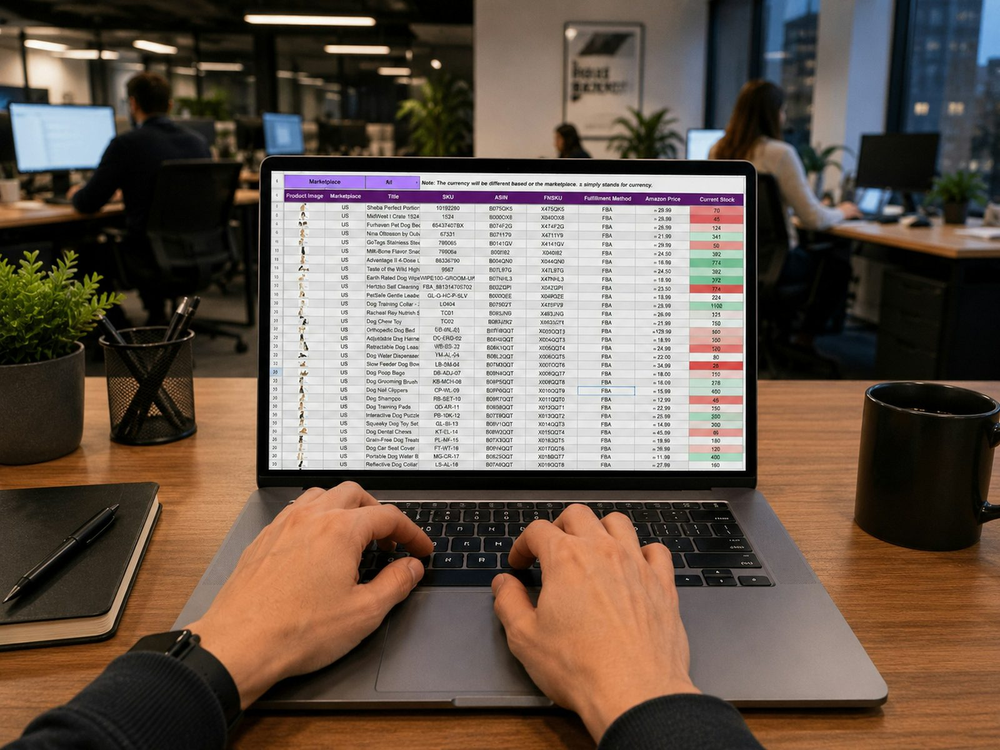
Welcome to Module 3. Maayong hapon, everyone! For the next three and a half hours we live inside a spreadsheet.
This first topic is all about getting comfortable: knowing what you're looking at, moving around quickly, and typing data into the right place. Just watch my screen; you don't need to type along. I'll demo every step on one file, and you answer a quick check in the LMS portal at the end.
The big idea
A spreadsheet is a columnar notebook that does the math for you.
- Organize lists into rows and columns: one record per row.
- Calculate totals, averages and differences, and redo them instantly when a number changes.
- Show the result as a neat table or a chart for your report.
 Microsoft Excel
Microsoft Excel Google Sheets
Google Sheets LibreOffice Calc
LibreOffice Calc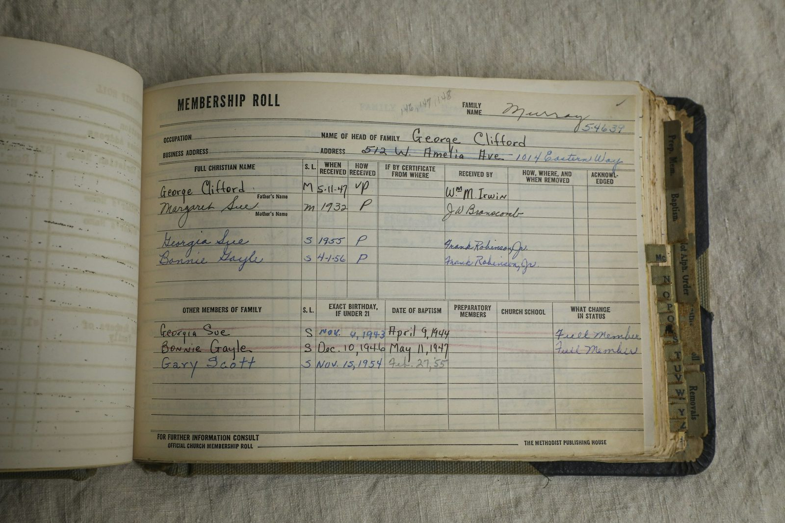
Show the old ledger: rows, columns, a total at the bottom. Our parents and the older offices did exactly this by hand. A spreadsheet is the same ruled notebook, except it adds for you and never gets tired.
Three apps do this job. Most of our office PCs have Excel; Google Sheets runs free in the browser; LibreOffice Calc is free to install. The skills transfer: what you learn in one works in the others, with small differences I'll point out.
By the end of this topic
You will be able to…
- Find: name the parts: workbook, worksheet, cell, column, row, Name Box, formula bar.
- Move: jump around with the keyboard and select any range you need.
- Build: type, edit, AutoFill, copy, insert rows, resize columns, and undo.
Three goals: find, move, build. Nothing fancy yet. No formulas until Topic 3.3.
Introduce the Office Supplies Inventory. It's our demo file for the whole module: I type it today, format it in 3.2, add formulas in 3.3 and functions in 3.4, and chart it later. Ask them to watch one file grow, step by step, the way a real office list does.
Three words to know
Workbook, worksheet, cell
Workbook
The whole file, like a binder. Excel saves it as .xlsx, LibreOffice as .ods; a Google Sheets file lives in Google Drive.
Worksheet
One page inside the binder, shown as a tab at the bottom: Sheet1, Sheet2. A workbook can hold many.
Cell
One box on the page, where a column meets a row. Each cell holds one piece of data: a word, a number or a date.
Use the binder picture. The workbook is the binder you save and email. Each worksheet is a page, a tab at the bottom. Each cell is one box on the page.
Ask: "If I email you Supplies 2026.xlsx, did I send a workbook or a worksheet?" A workbook, with all its tabs. This matters later when someone says "check the November sheet": they mean the tab, not a different file.
Tour of the window
What you're looking at
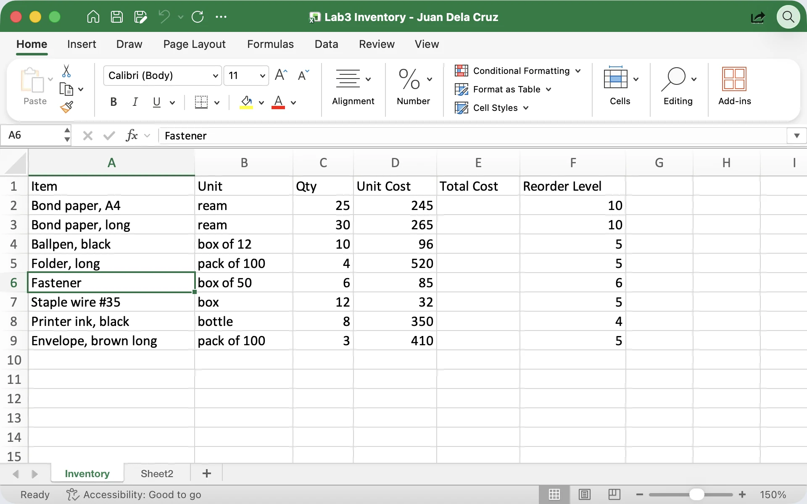
Microsoft Excel for Mac, sample Office Supplies Inventory. Excel on Windows adds a File tab left of Home; the rest is the same.
- Ribbon: every command, grouped in tabs.
- Name Box: the address of the active cell (A6).
- Formula bar: what is really inside the cell.
- Column letters and row numbers.
- Active cell: the one with the thick border.
- Sheet tabs: the worksheets in this workbook.
Share your own Excel window and point to each numbered part as you say it. Ribbon on top; in Google Sheets it's a menu bar plus a toolbar, same idea.
Spend time on 2 and 3: the Name Box tells you where you are; the formula bar tells you what's really in the cell. Click a few cells and ask them to read the Name Box aloud or in the chat. Number 5 has no marker on purpose: it's the cell with the thick border.
Columns · rows · addresses
Every cell has an address, like a classroom seat plan.
- Columns go down and use letters: A, B, C … Z, AA, AB…
- Rows go across and use numbers: 1, 2, 3…
- Address = column letter + row number: C4, never 4C.
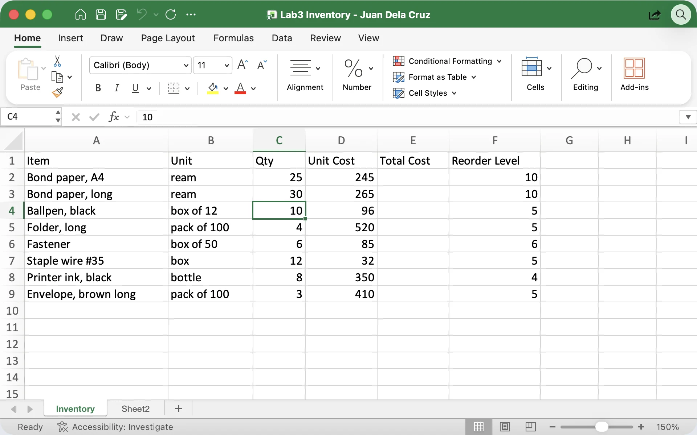
Microsoft Excel for Mac. Column C and row 4 light up; the Name Box says C4.
Seat plan analogy: the teacher says "column C, row 4" and everyone knows which child. Same here: C4. Letter first, then number.
Point out the shaded column C and row 4 crossing at the thick-bordered cell, and the Name Box saying C4. Excel has over a million rows and 16,384 columns (up to XFD), so you will never run out.
Run the chat quiz, then click Show: A6.
Two small boxes, big help
The Name Box and the formula bar
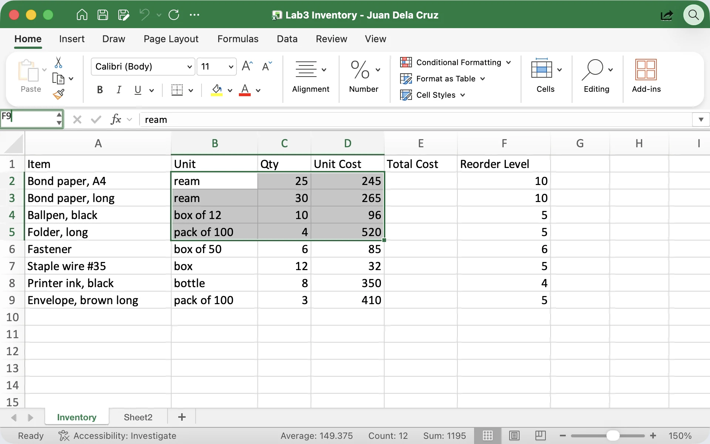
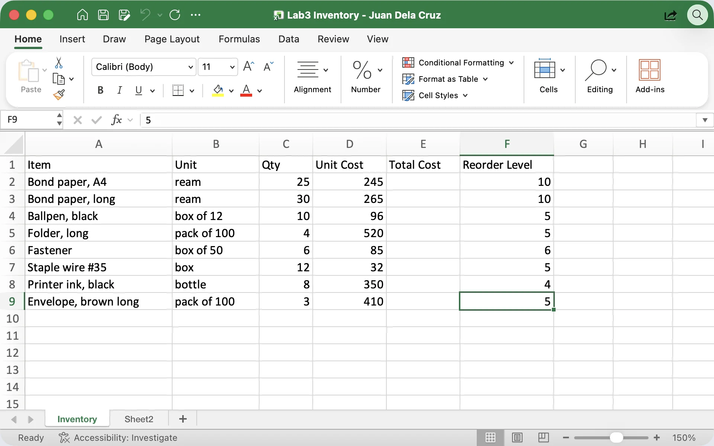
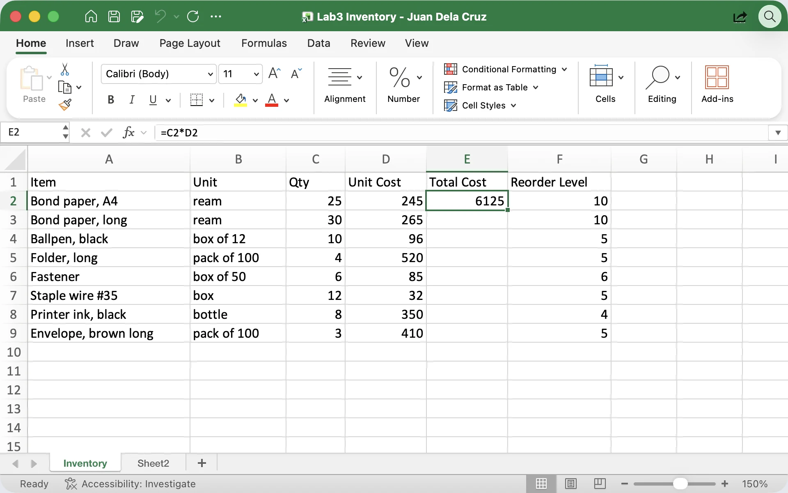
Microsoft Excel for Mac, sample Office Supplies Inventory. Same boxes in Excel for Windows, Google Sheets and Calc.
- Name Box · "Where am I?" It shows the active cell's address. Click it and type an address, like F9.
- Press Enter: you land on cell F9. Handy in a long sheet.
- Formula bar · "What's really inside?" Cell E2 shows 6125; the bar shows the formula =C2*D2. (Preview of Topic 3.3.)
Demo both live. Click the Name Box, type F9, press Enter: the cursor jumps. Handy in a long sheet.
Then the formula bar. Show a cell with a formula: the cell shows the answer, the bar shows the recipe. This is how anyone reviewing a sheet at work checks it: click the cell, read the formula bar. If it shows a typed number instead of a formula, that's a problem. We'll get there in 3.3.
Keyboard first
Moving around without the mouse
Demo each key on your screen and say it aloud as you press it. "Ctrl+Home. Where am I? A1. Now Ctrl+Down Arrow." Ask them to watch the Name Box change.
The Tab-then-Enter trick is the one encoders love: type across a row with Tab, press Enter, and you're back at the start of the next row. It works in Excel; Google Sheets and Calc behave very similarly. Mac users: Cmd for Ctrl, though some Mac keyboards need Fn for Home and End.
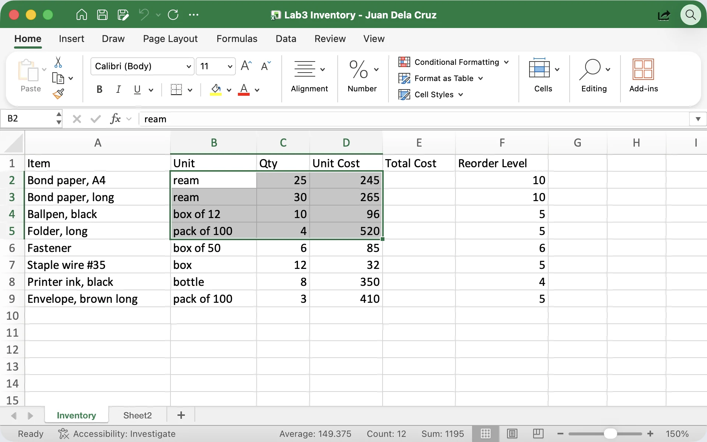
Selected range B2:D5, read "B2 to D5". Excel's status bar shows Count: 12.
Selecting
A range is a block of cells.
- Click and drag from the first cell to the last.
- Click the first cell, Shift+click the last.
- Shift+arrows grows the selection; Ctrl+Shift+↓ selects to the end of the data.
- Click a column letter or row number to select the whole column or row. Ctrl+A selects all.
- Ctrl+click adds a separate block.
A range is written first cell, colon, last cell: B2:D5. The colon means "to". You'll type ranges like this in every function in 3.4, so get used to reading them now.
Select B2:D5 three ways on screen: drag, Shift+click, and Shift+arrows. Then click the letter C to select the whole column. Ask: "How many cells are in B2:D5?" Three columns times four rows: 12.
Cell manipulation
Enter, edit and clear data
Enter
Click a cell, type, then press Enter or Tab. Typing into a filled cell replaces everything in it.
Esc cancels before you press Enter.
Edit
To fix part of a cell, press F2 (or double-click the cell, or click in the formula bar). Now the arrow keys move inside the text.
Clear
Delete clears the contents but keeps the formatting. To wipe everything: Excel Home › Clear › Clear All.
Demo the classic mistake: click a cell with "Bond paper, A4" and just start typing "long". The whole cell is replaced. Undo, then do it properly with F2, move the cursor, and fix only the word.
On some laptops F2 needs the Fn key too; double-clicking the cell always works. Stress the warning box: numbers and units go in separate columns. We'll see in 3.2 why "25 reams" breaks every total.
Let the sheet type for you
AutoFill: drag the fill handle
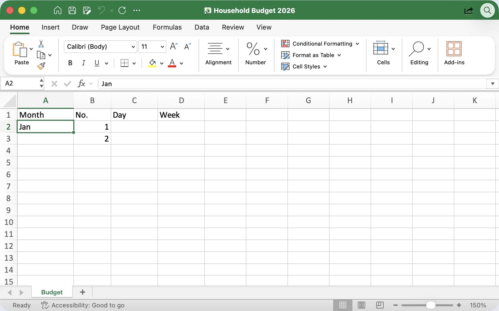
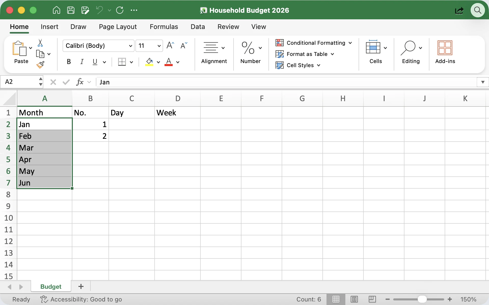
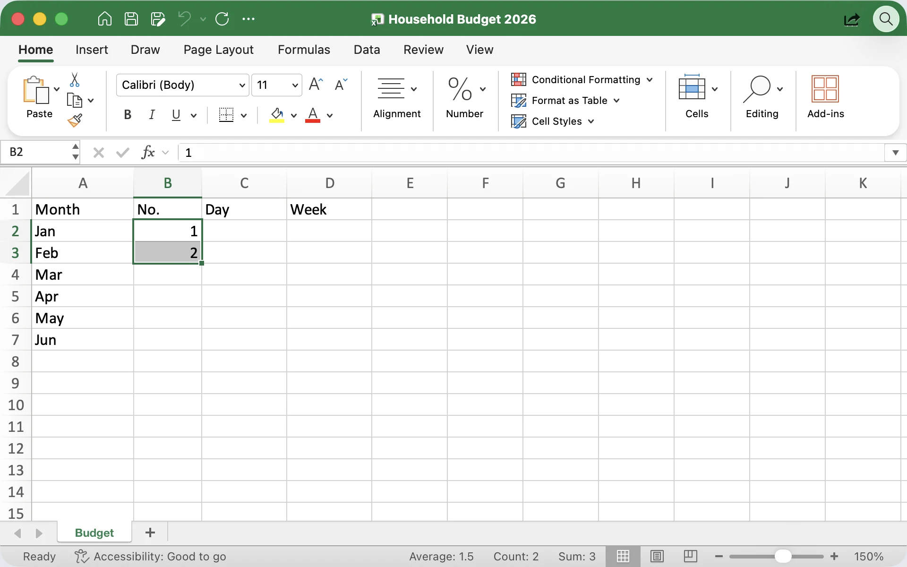
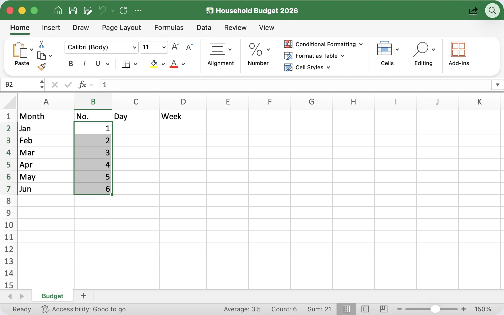
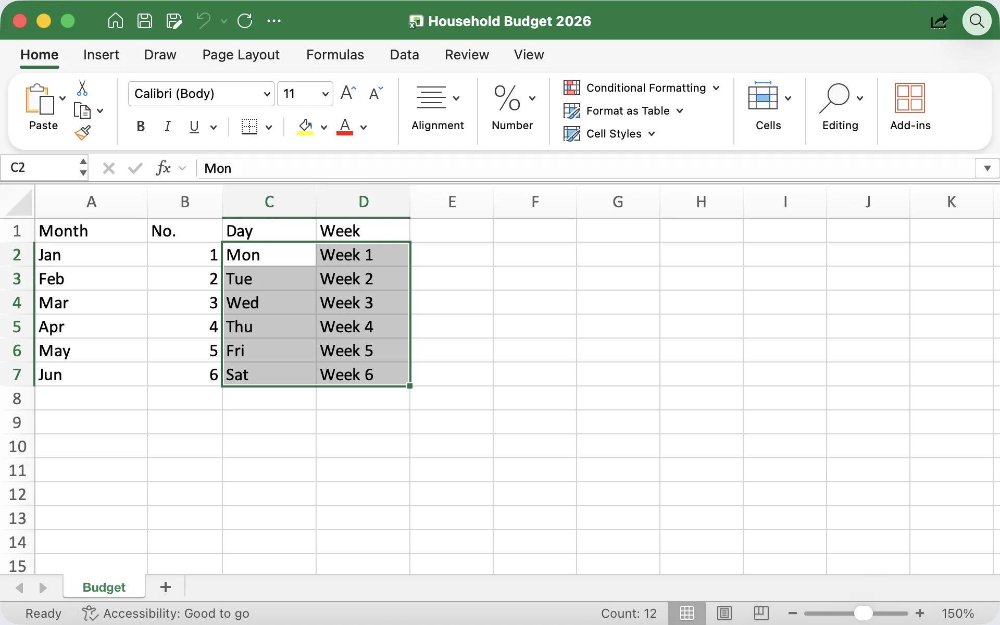
Microsoft Excel for Mac, sample Household Budget 2026. One drag fills each column.
- Type the start of a pattern: Jan.
- Find the fill handle: the small square at the bottom-right corner of the selection.
- Drag it down or across. The sheet continues the series.
- Numbers: type 1 and 2, select both, then drag, so the sheet sees the step.
- Days and weeks work too: Mon, Week 1. Tip: double-click the fill handle to fill as far as the column beside it.
Demo on a new sheet: type Jan, drag the little square down: Feb, Mar, Apr. Type Mon: Tue, Wed. For numbers, type 1 and 2 in two cells, select both, then drag, so the sheet sees the step.
Office use: month headers for a monthly report, numbered rows for an attendance sheet. Home use: the 12 months of a budget. If a plain number only copies instead of counting, that's why: select two cells first.
Move data around
Copy, cut and paste
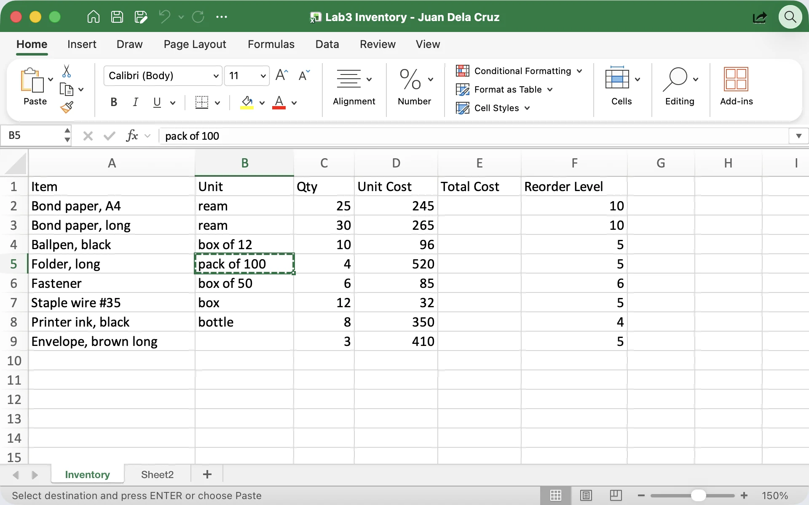
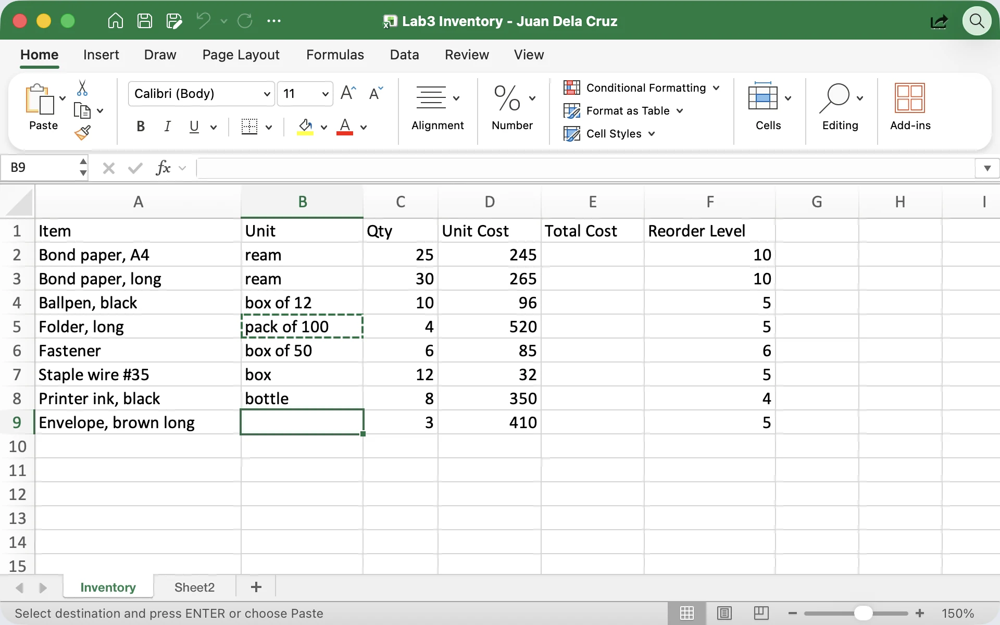
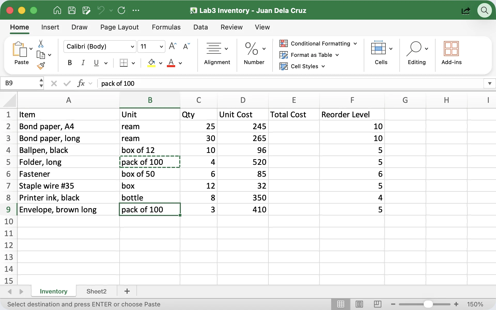
Microsoft Excel for Mac: copied B5 (dashed), pasted into B9. On a Mac the keys are Cmd+C and Cmd+V.
Same shortcuts as in Word, with one difference: the marching ants. After Ctrl+C the source keeps blinking until you press Esc, and you can paste many times.
Demo copying "pack of 100" from B5 to B9 so nobody retypes it. Then show Ctrl+D: select a cell and the empty cells below it, press Ctrl+D, done. Remind them pasting overwrites without warning, so Ctrl+Z is always nearby.
Reshape the sheet
Insert, delete and resize rows and columns
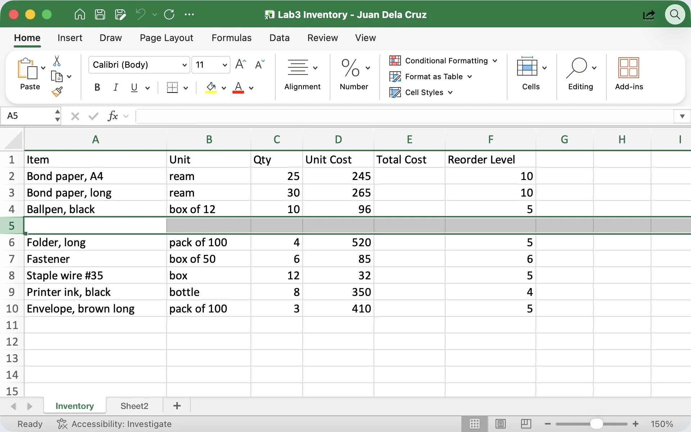
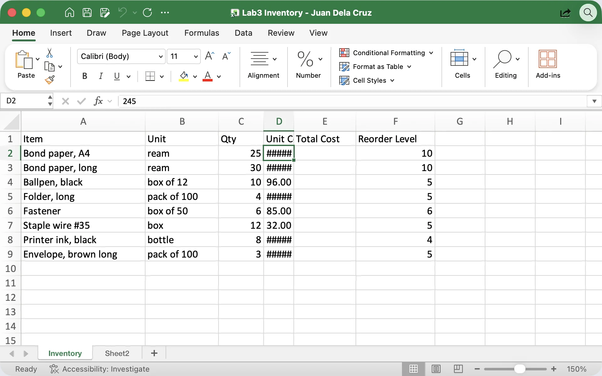
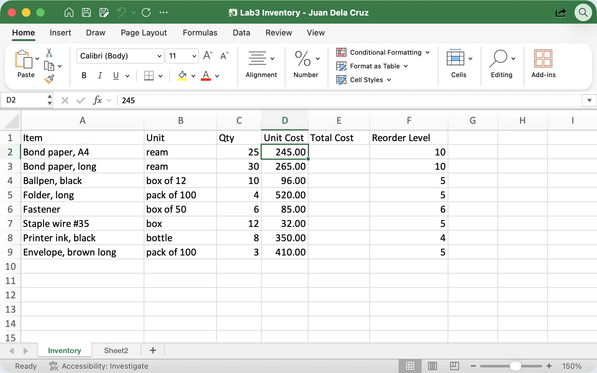
Microsoft Excel for Mac, sample Office Supplies Inventory. Same steps on Windows.
- Insert or delete: right-click the row number or column letter › Insert (Sheets: Insert 1 row above) or Delete. The rows below move to make room.
- Seeing #####? The column is too narrow for the number. The number is still there: look at the formula bar.
- Widen it: drag the line between two column letters, or double-click it to AutoFit. Sheets: right-click the column › Resize column › Fit to data.
Demo: right-click row 5, Insert. A blank row appears and Folder moves to row 6. Type "Correction tape", then Ctrl+Z twice to put things back, because our dataset must stay exactly 8 items.
Then make column A too narrow on purpose and double-click the border to AutoFit. Shrink the Unit Cost column until ##### appears. That scares people, but it only means "I need more room". The number is still there.
Space or K plays and pauses (or click the video). C turns captions on or off; the speed button offers 1.25× and 0.85×. The arrows still move between slides, and the video pauses when you leave this slide.
Length 4:54. Pause anywhere to take a question; captions stay on screen for anyone without sound.
After the video, take one or two questions before the quick check.
Quick check · click an answer
You're in cell F9 at the bottom of the inventory. What takes you straight to A1?
Give them a minute to answer in the LMS portal, then click the options. B, Ctrl+Home.
Option A catches many people: plain Home only goes to the start of the row. Mention the Name Box trick again: type A1 and press Enter. Two ways to the same place, pick the one you'll remember.
Recap · Topic 3.1
You can find, move and build in a spreadsheet.
Find
Workbook › worksheet › cell. The Name Box says where; the formula bar says what.
Move and select
Tab, Enter, Ctrl+Home, Ctrl+arrows. Ranges are written like B2:D5.
Build
Type, F2 to edit, AutoFill, copy, insert, AutoFit, and Ctrl+Z when in doubt.
Next · 3.2 Formatting Worksheets and Data Types: turning your plain inventory into a clean, readable table.
Summarize: find, move, build. The inventory is typed and saved, with the tab named Inventory. Take one or two questions.
Bridge to 3.2: "Our table works, but it looks plain, and the costs don't show the peso sign yet. Next, we make it look professional and make sure every value is the right type."